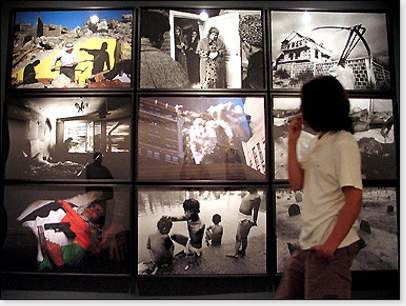

Cuộc triển lãm nhìn vào “chiến tranh”, những bình diện khác nhau về kinh nghiệm chiến tranh tác động trực tiếp đến những cá nhân, cộng đồng cùng những cách miêu tả về chiến tranh qua sản phẩm văn hoá.
“Sự khác biệt giữa hoà bình và chiến tranh là trong thời bình con cái chôn cất cha mẹ, còn trong thời chiến thì cha mẹ chôn cất con cái”, năm thế kỉ trước CN sử gia Hilạp Thucidides đã viết như vậy, những nhận định của ông được nêu bật trong cuộc triển lãm này.
Uỷ ban tổ chức triển lãm gồm Antonio Monegal, cựu giáo sư ÐH Harvard và Cornell; giáo sư ÐH Pompeu Fabra của Barcelona, Francesc Torres, một ngệ sĩ sĩ lẫy lừng thế giới và Jose Maria Ridao, trước là nhà ngoại giao phục vụ ở Trung Ðông.
Họ đã chọn mở đầu triển lãm bằng một loạt đồ chơi trẻ con thịnh hành ở Pháp trước Ðại Chiến 1914-18 và những đồ chơi của Tây ban nha thời kì sau nội chiến. “Chiến tranh không chỉ là một hiện tượng quân sự... mà tự nó còn sáp nhập thành những định chế và những lối thực hành xã hội.” Tờ chương trình giải thích về cuộc triển lãm, còn nói thêm rằng, “Chúng ta tự mình tập làm quen với chiến tranh ở ngay trong văn hoá của mình và trong những môn chơi ưa thích, và trong cung cách gần như khó nhận thấy, chúng ta sáp nhập nó vào trí tưởng tượng tập thể qua những trò chơi, thời trang, điện ảnh hoặc trong quảng cáo.”
Ðiểm thu hút nhất tại cuộc triển lãm này là tác phẩm Hitler dời sang phía đông của David Levinthal, gồm một loạt những bức ảnh trông giống ảnh chụp cảnh chiến tranh mà thật ra là montage/ ráp nối chụp từ những đồ chơi.
Quân Ðức xuất hiện tiến về phía trận tuyến nước Nga ngập tuyết, thật ra là những chú lính đồ chơi được sắp đặt trên một lớp bột mì. Ngoài ra, còn có những hình ảnh mô tả cảnh đổ bộ lên bờ Normandy và những cảnh tượng từ cuộc Nội Chiến Tây ban nha dưới góc nhìn của Robert Capa, cũng như cách nhìn vào sự tàn sát trong chiến tranh Việt Nam của Don MacCullin.
Nhưng cuộc triển lãm này cũng giới thiệu nhiều nghệ sĩ ít nổi tiếng hơn, như hoạ sĩ Quang Thọ từ Việt Nam, Alfred Jaar từ Rwanda và Gervasio Sanchez, một nhân chứng về những sinh mạng bị huỷ hoại vì mìn chôn.
Những hoạ phẩm trưng bày gồm tác phẩm mang sắc thái bi quan của Otto Dix, của Goerge Grosz, Leon Golub, Marc Chagall và Fernand Leger, Và còn có danh sách tham gia của một số hoạ sĩ ít được biết đến như Kerr Eby và Robert Smith, là những quân nhân mà kinh ngiệm riêng về trận mạc của họ cho thấy thực tế ác nghiệt về số phận của người lính.
Trong bối cảnh của Liên Xô cũ có những tác phẩm từ bảo tàng cách mạng P. A. Krivonogov cho thấy cuộc tiến quân 1945 vào Berlin, còn hoạ sĩ Hoa kì Harvey Dunn truyền đạt hình ảnh người lính và nhân tính của họ trong cuộc xung đột Thế Chiến I.
Những đóng góp trong thể loại nghệ thuật video gồm Những cơn mộng ngạt của Dan Reeves, một cựu chiến binh Mĩ, còn nhà làm phim tài liệu nổi tiếng của Ấn độ Anand Patwardhan (http://www.patwardhan.com/) đưa ra một chân dung về cuộc thử ngiệm bom nguyên tử của xứ sở mình.
Một yếu tố bất ổn nảy sinh khi đưa ra cái thực tế cùng cái hư cấu về chiến tranh, vừa song song và đồng thời mô tả những hình ảnh về cuộc đổ bộ lên bờ Normandy trên những màn ảnh đặt cạnh nhau. Một bên là cái thật; còn bên kia đưa ra những trích cảnh từ một bộ phim ăn khách “Giải cứu binh nhì Ryan” của đạo diễn Steven Spielberg.
Ở tiêu điểm ôn hoà hơn, chương trình cũng mô tả các minh tinh, ca sĩ (Hollywood) giữa bối cảnh chiến tranh, khi họ tiêu khiển cho quân đội Ðồng minh, như Marlene Dietrich và Marilyn Monroe, hay ca sĩ pop Marta Sanchez lộng lẫy trên một chiến hạm trong Chiến tranh vùng Vịnh.
Phơi bày một hố thẳm vô tận những cách mô tả cuộc xung đột, các uỷ viên tổ chức cuộc triển lãm cô đọng bằng một câu nói súc tích của triết gia Hoa kì George Santayana (1863-1952):
“Chỉ có những người chết là đã thấy chiến tranh kết thúc.”
Lược dịch từ AFP, 18.7.2004